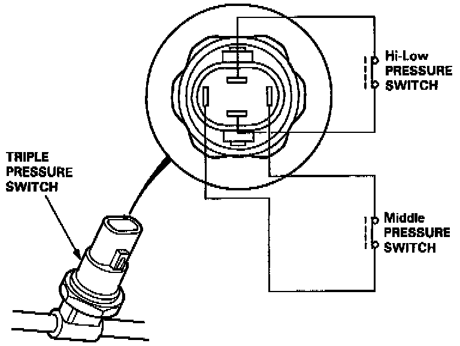
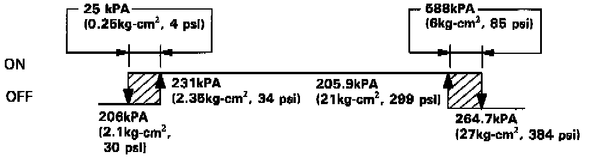
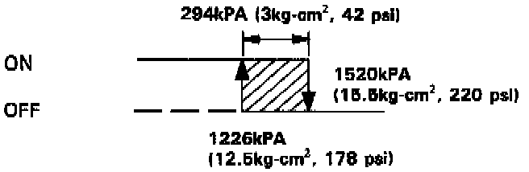

Refrigerant Pressure Sensor / Switch: Description and Operation

A/C TRIPLE PRESSURE SWITCH
The triple pressure switch consists of a Hi-Low pressure switch and a middle pressure switch.
Hi-Low Pressure Switch Operating Ranges:

Hi-Low pressure switch
If the refrigerant pressure becomes too high (due to blockage), or too low (due to leakage), the triple pressure switch sends a signal to the fan control unit to prevent the compressor from operating.
Middle Pressure Switch Operating Range:

Middle pressure switch
If the refrigerant pressure goes above or below 1520 kpa (15.5kg-cm2, 220 psi), the triple pressure switch sends a signal to the operation of the condenser fan and radiator fan speed (Hi-Low).